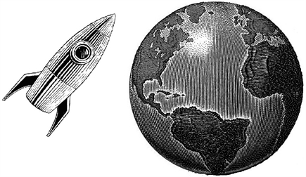

OSER
“Ce n'est pas parce que les choses sont difficiles que nous n'osons pas, c'est parce que nous n'osons pas qu'elles sont difficiles.” Sénèque
Trouver sa place dans la vie et oser l’occuper vraiment, telle est, au fond, la promesse de toute démarche thérapeutique. On dit souvent que le premier coup de téléphone à un thérapeute, la première inscription à un stage de développement personnel sont déjà bénéfiques : ils signifient que l’on se donne rendez-vous à soi-même, malgré ses peurs, ses doutes, ses résistances. D’autant que le doute de soi est l’un des principaux motifs de consultation. Pourtant, oser est une vertu humaine que nous pouvons tous travailler et favoriser. Grâce à elle, nous pouvons éviter les difficultés quotidiennes avec plus de calme et d'hardiesse.
Le premier pas pour oser c'est de concevoir une réalisation, une direction, c'est de la rêver, l'imaginer, la nommer. C'est se donner les moyens de créer une nouvelle représentation du monde pour en définir d'autres, de concevoir et d'animer l'avenir. C'est pouvoir transgresser nos croyances limitantes et réorganiser l'ordonnancement de nos valeurs. C'est également aller plus loin dans l'expression et l'exploration de nos désirs, fantasmes ou rêves de toute-puissance et ceci n'est absolument pas dangereux si en même temps nous abordons nos peurs, nos démons, nos failles et nos fragilités.
Un vieux proverbe nous rappelle que la peur et le courage sont frère et sœur. Les peurs sont un ajustement quasi instinctif entre nous et la compréhension de notre environnement. D’une certaine manière, c’est comme si l’être humain était toujours obligé de passer les barrières de l’angoisse et de l’insécurité pour atteindre ses buts. Alors, d’où pouvons-nous tirer cette étincelle inspirante capable de stimuler notre courage dans les moments où nous en avons le plus besoin ? Généralement, nous sommes très résistants au changement, de la même manière que la peur nous conditionne. Par conséquent, c’est là qu’entre en jeu une capacité que nous pouvons tous travailler et favoriser : l’audace psychologique. C'est cette valeur personnelle qui nous permet de gagner en confiance, qui mobilise nos ressources internes afin que nous puissions atteindre nos buts et affronter les adversités.
L'idée est de savoir investir des ressources et développer des habilités pour travailler sur notre propre bien-être, celles qui contrôlent mieux le stress et l’anxiété. Ainsi, parmi toutes ces forces une se démarque : l’audace. Or, elle n’est pas à comprendre uniquement comme synonyme de courage. En effet, elle génère des stratégies dérivées de la clarté de pensée. Elle inclut ainsi le désir d’agir de manière concrète car la personne audacieuse a un code éthique, une direction, un objectif et la volonté de vaincre ses peurs.
Oser requiert donc de perdre momentanément l’équilibre. Or, ne pas oser implique tôt ou tard de se perdre soi-même. Apprenons ainsi à éveiller cette valeur, concédons le permis d’être un peu plus audacieux en travaillant sur ces dimensions.
Le premier pas pour oser c'est de concevoir une réalisation, une direction, c'est de la rêver, l'imaginer, la nommer. C'est se donner les moyens de créer une nouvelle représentation du monde pour en définir d'autres, de concevoir et d'animer l'avenir. C'est pouvoir transgresser nos croyances limitantes et réorganiser l'ordonnancement de nos valeurs. C'est également aller plus loin dans l'expression et l'exploration de nos désirs, fantasmes ou rêves de toute-puissance et ceci n'est absolument pas dangereux si en même temps nous abordons nos peurs, nos démons, nos failles et nos fragilités.
Un vieux proverbe nous rappelle que la peur et le courage sont frère et sœur. Les peurs sont un ajustement quasi instinctif entre nous et la compréhension de notre environnement. D’une certaine manière, c’est comme si l’être humain était toujours obligé de passer les barrières de l’angoisse et de l’insécurité pour atteindre ses buts. Alors, d’où pouvons-nous tirer cette étincelle inspirante capable de stimuler notre courage dans les moments où nous en avons le plus besoin ? Généralement, nous sommes très résistants au changement, de la même manière que la peur nous conditionne. Par conséquent, c’est là qu’entre en jeu une capacité que nous pouvons tous travailler et favoriser : l’audace psychologique. C'est cette valeur personnelle qui nous permet de gagner en confiance, qui mobilise nos ressources internes afin que nous puissions atteindre nos buts et affronter les adversités.
L'idée est de savoir investir des ressources et développer des habilités pour travailler sur notre propre bien-être, celles qui contrôlent mieux le stress et l’anxiété. Ainsi, parmi toutes ces forces une se démarque : l’audace. Or, elle n’est pas à comprendre uniquement comme synonyme de courage. En effet, elle génère des stratégies dérivées de la clarté de pensée. Elle inclut ainsi le désir d’agir de manière concrète car la personne audacieuse a un code éthique, une direction, un objectif et la volonté de vaincre ses peurs.
Oser requiert donc de perdre momentanément l’équilibre. Or, ne pas oser implique tôt ou tard de se perdre soi-même. Apprenons ainsi à éveiller cette valeur, concédons le permis d’être un peu plus audacieux en travaillant sur ces dimensions.

Cependant, un aspect qui nous met toujours à l’épreuve est l’incertitude. Cet espace où grandissent les peurs et où règne l’insécurité. Le fait de ne pas savoir ce qu’il va se passer génère en nous une certaine angoisse, certaines résistances qui en viennent souvent même à nous paralyser.
Il est alors possiblement judicieux d'être à l'écoute de nos résistances. Contrairement à une croyance commune, elles ne sont pas nos ennemies, ne sont pas des fautes ni des faiblesses, bien au contraire. Si elles nous freinent, c'est pour nous protéger, pour prendre en compte les limites actuelles de nos désirs et de notre volonté. Si elles nous bloquent physiquement, c'est aussi pour nous permettre de prendre le temps de mesurer si ce que nous allons engager est approprié. Donc, une manière d’affronter ces situations passe par l’audace psychologique en apprenant à prendre des décisions. Une décision, c’est toujours la première étape, c’est un mouvement, et elle nous permet de prendre les rênes de notre propre vie.
Ainsi faut-il prendre le courage de se remettre en question et de penser différemment? Quiconque ne remet pas en question sa réalité finit par s’acclimater, par se laisser vaincre et par se conditionner. La personne audacieuse, elle, évite de se retrouver dans ce genre de posture rigidifiante, car elle a appris à penser différemment, à se poser des questions (dé)structurantes, à vouloir aller plus loin, à se forger sa propre opinion.
Alors, oser c'est concevoir valider ces étapes afin de s'accomplir :
Il est alors possiblement judicieux d'être à l'écoute de nos résistances. Contrairement à une croyance commune, elles ne sont pas nos ennemies, ne sont pas des fautes ni des faiblesses, bien au contraire. Si elles nous freinent, c'est pour nous protéger, pour prendre en compte les limites actuelles de nos désirs et de notre volonté. Si elles nous bloquent physiquement, c'est aussi pour nous permettre de prendre le temps de mesurer si ce que nous allons engager est approprié. Donc, une manière d’affronter ces situations passe par l’audace psychologique en apprenant à prendre des décisions. Une décision, c’est toujours la première étape, c’est un mouvement, et elle nous permet de prendre les rênes de notre propre vie.
Ainsi faut-il prendre le courage de se remettre en question et de penser différemment? Quiconque ne remet pas en question sa réalité finit par s’acclimater, par se laisser vaincre et par se conditionner. La personne audacieuse, elle, évite de se retrouver dans ce genre de posture rigidifiante, car elle a appris à penser différemment, à se poser des questions (dé)structurantes, à vouloir aller plus loin, à se forger sa propre opinion.
Alors, oser c'est concevoir valider ces étapes afin de s'accomplir :
- s'ouvrir au changement
- reconnaitre ses blessures
- explorer ses pulsions
- plonger dans ses racines
- libérer ses rêves
- accueillir l'imprévu
- traverser ses peurs
EN RELATION


VISION
AFFIRMATION


ATARAXIE
CAP
CREATIVITE
(bonheur)

AUTHENTICITE
PROJET
(in) CONFORT